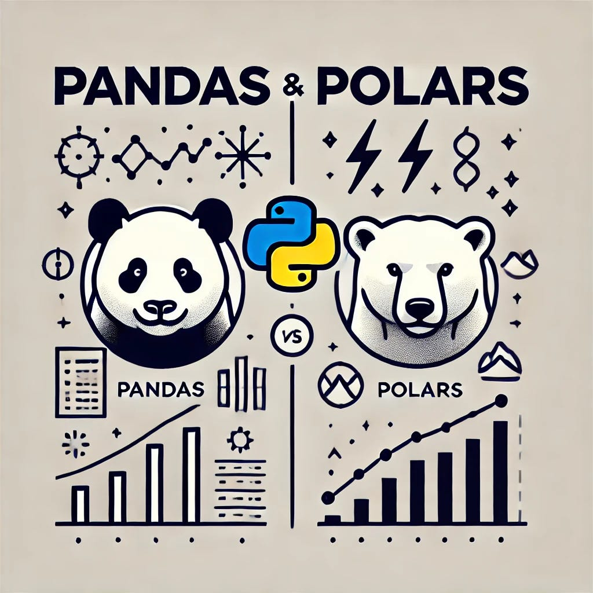

# Import pandas
import pandas as pd🐼 From Pandas to Polars 🐻❄️

As datasets grow in size and complexity, performance and efficiency become critical in data processing. While Pandas has long been the go-to library for data manipulation in Python, it can struggle with speed and memory usage, especially on large datasets. Polars, a newer DataFrame library written in Rust, offers a faster, more memory-efficient alternative with support for lazy evaluation and multi-threading.
This guide explores how to convert Pandas DataFrames to Polars, and highlights key differences in syntax, performance, and functionality. Whether you’re looking to speed up your data workflows or just exploring modern tools, understanding the transition from Pandas to Polars is a valuable step.
Installation and Setup
Pandas
Polars
# Import polars
import polars as plCreating DataFrames
From dictionaries
Pandas
import pandas as pd
# Create DataFrame from dictionary
data = {
'name': ['Alice', 'Bob', 'Charlie', 'David'],
'age': [25, 30, 35, 40],
'city': ['New York', 'Los Angeles', 'Chicago', 'Houston']
}
df_pd = pd.DataFrame(data)
print(df_pd) name age city
0 Alice 25 New York
1 Bob 30 Los Angeles
2 Charlie 35 Chicago
3 David 40 HoustonPolars
import polars as pl
# Create DataFrame from dictionary
data = {
'name': ['Alice', 'Bob', 'Charlie', 'David'],
'age': [25, 30, 35, 40],
'city': ['New York', 'Los Angeles', 'Chicago', 'Houston']
}
df_pl = pl.DataFrame(data)
print(df_pl)shape: (4, 3)
┌─────────┬─────┬─────────────┐
│ name ┆ age ┆ city │
│ --- ┆ --- ┆ --- │
│ str ┆ i64 ┆ str │
╞═════════╪═════╪═════════════╡
│ Alice ┆ 25 ┆ New York │
│ Bob ┆ 30 ┆ Los Angeles │
│ Charlie ┆ 35 ┆ Chicago │
│ David ┆ 40 ┆ Houston │
└─────────┴─────┴─────────────┘Basic Operations
Selecting columns
Pandas
# Select a single column (returns Series)
series = df_pd['name']
# Select multiple columns
df_subset = df_pd[['name', 'age']]Polars
# Select a single column (returns Series)
series = df_pl['name']
# Alternative method
series = df_pl.select(pl.col('name')).to_series()
# Select multiple columns
df_subset = df_pl.select(['name', 'age'])
# Alternative method
df_subset = df_pl.select(pl.col(['name', 'age']))Adding a new column
Pandas
# Add a new column
df_pd['is_adult'] = df_pd['age'] >= 18
# Using assign (creates a new DataFrame)
df_pd = df_pd.assign(age_squared=df_pd['age'] ** 2)Polars
# Add a new column
df_pl = df_pl.with_columns(
pl.when(pl.col('age') >= 18).then(True).otherwise(False).alias('is_adult')
)
# Creating derived columns
df_pl = df_pl.with_columns(
(pl.col('age') ** 2).alias('age_squared')
)
# Multiple columns at once
df_pl = df_pl.with_columns([
pl.col('age').is_null().alias('age_is_null'),
(pl.col('age') * 2).alias('age_doubled')
])Basic statistics
Pandas
# Get summary statistics
summary = df_pd.describe()
# Individual statistics
mean_age = df_pd['age'].mean()
median_age = df_pd['age'].median()
min_age = df_pd['age'].min()
max_age = df_pd['age'].max()Polars
# Get summary statistics
summary = df_pl.describe()
# Individual statistics
mean_age = df_pl.select(pl.col('age').mean()).item()
median_age = df_pl.select(pl.col('age').median()).item()
min_age = df_pl.select(pl.col('age').min()).item()
max_age = df_pl.select(pl.col('age').max()).item()Filtering Data
Simple filtering
Pandas
# Filter rows
adults = df_pd[df_pd['age'] >= 18]
# Multiple conditions
filtered = df_pd[(df_pd['age'] > 30) & (df_pd['city'] == 'Chicago')]Polars
# Filter rows
adults = df_pl.filter(pl.col('age') >= 18)
# Multiple conditions
filtered = df_pl.filter((pl.col('age') > 30) & (pl.col('city') == 'Chicago'))Complex filtering
Pandas
# Filter with OR conditions
df_filtered = df_pd[(df_pd['city'] == 'New York') | (df_pd['city'] == 'Chicago')]
# Using isin
cities = ['New York', 'Chicago']
df_filtered = df_pd[df_pd['city'].isin(cities)]
# String contains
df_filtered = df_pd[df_pd['name'].str.contains('li')]Polars
# Filter with OR conditions
df_filtered = df_pl.filter((pl.col('city') == 'New York') | (pl.col('city') == 'Chicago'))
# Using is_in
cities = ['New York', 'Chicago']
df_filtered = df_pl.filter(pl.col('city').is_in(cities))
# String contains
df_filtered = df_pl.filter(pl.col('name').str.contains('li'))Grouping and Aggregation
Basic groupby
Pandas
# Group by one column and aggregate
city_stats = df_pd.groupby('city').agg({
'age': ['mean', 'min', 'max', 'count']
})
# Reset index for flat DataFrame
city_stats = city_stats.reset_index()Polars
# Group by one column and aggregate
city_stats = df_pl.group_by('city').agg([
pl.col('age').mean().alias('age_mean'),
pl.col('age').min().alias('age_min'),
pl.col('age').max().alias('age_max'),
pl.col('age').count().alias('age_count')
])Joining/Merging DataFrames
Inner Join
Pandas
# Create another DataFrame
employee_data = {
'emp_id': [1, 2, 3, 4],
'name': ['Alice', 'Bob', 'Charlie', 'David'],
'dept': ['HR', 'IT', 'Finance', 'IT']
}
employee_df_pd = pd.DataFrame(employee_data)
salary_data = {
'emp_id': [1, 2, 3, 5],
'salary': [50000, 60000, 70000, 80000]
}
salary_df_pd = pd.DataFrame(salary_data)
# Inner join
merged_df = employee_df_pd.merge(
salary_df_pd,
on='emp_id',
how='inner'
)Polars
# Create another DataFrame
employee_data = {
'emp_id': [1, 2, 3, 4],
'name': ['Alice', 'Bob', 'Charlie', 'David'],
'dept': ['HR', 'IT', 'Finance', 'IT']
}
employee_df_pl = pl.DataFrame(employee_data)
salary_data = {
'emp_id': [1, 2, 3, 5],
'salary': [50000, 60000, 70000, 80000]
}
salary_df_pl = pl.DataFrame(salary_data)
# Inner join
merged_df = employee_df_pl.join(
salary_df_pl,
on='emp_id',
how='inner'
)Different join types
Pandas
# Left join
left_join = employee_df_pd.merge(salary_df_pd, on='emp_id', how='left')
# Right join
right_join = employee_df_pd.merge(salary_df_pd, on='emp_id', how='right')
# Outer join
outer_join = employee_df_pd.merge(salary_df_pd, on='emp_id', how='outer')Polars
# Left join
left_join = employee_df_pl.join(salary_df_pl, on='emp_id', how='left')
# Right join
right_join = employee_df_pl.join(salary_df_pl, on='emp_id', how='right')
# Outer join
outer_join = employee_df_pl.join(salary_df_pl, on='emp_id', how='full')Handling Missing Values
Checking for missing values
Pandas
# Check for missing values
missing_count = df_pd.isnull().sum()
# Check if any column has missing values
has_missing = df_pd.isnull().any().any()Polars
# Check for missing values
missing_count = df_pl.null_count()
# Check if specific column has missing values
has_missing = df_pl.select(pl.col('age').is_null().any()).item()Handling missing values
Pandas
# Drop rows with any missing values
df_pd_clean = df_pd.dropna()
# Fill missing values
df_pd_filled = df_pd.fillna({
'age': 0,
'city': 'Unknown'
})
# Forward fill
df_pd_ffill = df_pd.ffill()Polars
# Drop rows with any missing values
df_pl_clean = df_pl.drop_nulls()
# Fill missing values
df_pl_filled = df_pl.with_columns([
pl.col('age').fill_null(0),
pl.col('city').fill_null('Unknown')
])
# Forward fill
df_pl_ffill = df_pl.with_columns([
pl.col('age').fill_null(strategy='forward'),
pl.col('city').fill_null(strategy='forward')
])String Operations
Basic string operations
Pandas
# Convert to uppercase
df_pd['name_upper'] = df_pd['name'].str.upper()
# Get string length
df_pd['name_length'] = df_pd['name'].str.len()
# Extract substring
df_pd['name_first_char'] = df_pd['name'].str[0]
# Replace substrings
df_pd['city_replaced'] = df_pd['city'].str.replace('New', 'Old')Polars
# Convert to uppercase
df_pl = df_pl.with_columns(pl.col('name').str.to_uppercase().alias('name_upper'))
# Get string length
df_pl = df_pl.with_columns(pl.col('name').str.len_chars().alias('name_length'))
# Extract substring
df_pl = df_pl.with_columns(pl.col('name').str.slice(0, 1).alias('name_first_char'))
# Replace substrings
df_pl = df_pl.with_columns(pl.col('city').str.replace('New', 'Old').alias('city_replaced'))Advanced string operations
Pandas
# Split string
df_pd['first_word'] = df_pd['city'].str.split(' ').str[0]
# Pattern matching
has_new = df_pd['city'].str.contains('New')
# Extract with regex
df_pd['extracted'] = df_pd['city'].str.extract(r'(\w+)\s')Polars
# Split string
df_pl = df_pl.with_columns(
pl.col('city').str.split(' ').list.get(0).alias('first_word')
)
# Pattern matching
df_pl = df_pl.with_columns(
pl.col('city').str.contains('New').alias('has_new')
)
# Extract with regex
df_pl = df_pl.with_columns(
pl.col('city').str.extract(r'(\w+)\s').alias('extracted')
)Time Series Operations
Date parsing and creation
Pandas
# Create DataFrame with dates
dates_pd = pd.DataFrame({
'date_str': ['2023-01-01', '2023-02-15', '2023-03-30']
})
# Parse dates
dates_pd['date'] = pd.to_datetime(dates_pd['date_str'])
# Extract components
dates_pd['year'] = dates_pd['date'].dt.year
dates_pd['month'] = dates_pd['date'].dt.month
dates_pd['day'] = dates_pd['date'].dt.day
dates_pd['weekday'] = dates_pd['date'].dt.day_name()Polars
# Create DataFrame with dates
dates_pl = pl.DataFrame({
'date_str': ['2023-01-01', '2023-02-15', '2023-03-30']
})
# Parse dates
dates_pl = dates_pl.with_columns(
pl.col('date_str').str.strptime(pl.Datetime, '%Y-%m-%d').alias('date')
)
# Extract components
dates_pl = dates_pl.with_columns([
pl.col('date').dt.year().alias('year'),
pl.col('date').dt.month().alias('month'),
pl.col('date').dt.day().alias('day'),
pl.col('date').dt.weekday().replace_strict({
0: 'Monday', 1: 'Tuesday', 2: 'Wednesday',
3: 'Thursday', 4: 'Friday', 5: 'Saturday', 6: 'Sunday'
}, default="unknown").alias('weekday')
])Date arithmetic
Pandas
# Add days
dates_pd['next_week'] = dates_pd['date'] + pd.Timedelta(days=7)
# Date difference
date_range = pd.date_range(start='2023-01-01', end='2023-01-10')
df_dates = pd.DataFrame({'date': date_range})
df_dates['days_since_start'] = (df_dates['date'] - df_dates['date'].min()).dt.daysPolars
# Add days
dates_pl = dates_pl.with_columns(
(pl.col('date') + pl.duration(days=7)).alias('next_week')
)
# Date difference
date_range = pd.date_range(start='2023-01-01', end='2023-01-10') # Using pandas to generate range
df_dates = pl.DataFrame({'date': date_range})
df_dates = df_dates.with_columns(
(pl.col('date') - pl.col('date').min()).dt.total_days().alias('days_since_start')
)Performance Comparison
This section demonstrates performance differences between pandas and polars for a large dataset operation.
import pandas as pd
import polars as pl
import time
import numpy as np
# Generate a large dataset (10 million rows)
n = 10_000_000
data = {
'id': np.arange(n),
'value': np.random.randn(n),
'group': np.random.choice(['A', 'B', 'C', 'D'], n)
}
# Convert to pandas DataFrame
df_pd = pd.DataFrame(data)
# Convert to polars DataFrame
df_pl = pl.DataFrame(data)
# Benchmark: Group by and calculate mean, min, max
print("Running pandas groupby...")
start = time.time()
result_pd = df_pd.groupby('group').agg({
'value': ['mean', 'min', 'max', 'count']
})
pd_time = time.time() - start
print(f"Pandas time: {pd_time:.4f} seconds")
print("Running polars groupby...")
start = time.time()
result_pl = df_pl.group_by('group').agg([
pl.col('value').mean().alias('value_mean'),
pl.col('value').min().alias('value_min'),
pl.col('value').max().alias('value_max'),
pl.col('value').count().alias('value_count')
])
pl_time = time.time() - start
print(f"Polars time: {pl_time:.4f} seconds")
print(f"Polars is {pd_time / pl_time:.2f}x faster")Running pandas groupby...
Pandas time: 0.2384 seconds
Running polars groupby...
Polars time: 0.0992 seconds
Polars is 2.40x fasterTypically, for operations like this, Polars will be 3-10x faster than pandas, especially as data sizes increase. The performance gap widens further with more complex operations that can benefit from query optimization.
API Philosophy Differences
Pandas and Polars differ in several fundamental aspects:
1. Eager vs. Lazy Execution
Pandas uses eager execution by default:
# Each operation is executed immediately
pd_df = pd.read_csv('data.csv')
pd_df = pd_df[pd_df['age'] > 0] # Filter is applied immediately
pd_df['new_col'] = pd_df['age'] * 2 # Transformation is applied immediately
result = pd_df.groupby('gender').sum() # Groupby is executed immediatelyPolars supports both eager and lazy execution:
# Eager execution
pl_df = pl.read_csv('data.csv')
pl_df = pl_df.filter(pl.col('age') > 0)
pl_df = pl_df.with_columns((pl.col('age') * 2).alias('new_col'))
result = pl_df.group_by('gender').agg(pl.col('age').sum())
# Lazy execution
pl_lazy_df = pl.scan_csv('data.csv') # Creates a lazy frame
result = (pl_lazy_df
.filter(pl.col('age') > 0)
.with_columns((pl.col('age') * 2).alias('new_col'))
.group_by('gender')
.agg(pl.col('age').sum())
.collect() # Only at this point is the query executed
)2. Method Chaining vs. Assignment
Pandas often uses assignment operations:
# Many pandas operations use in-place assignment
pd_df['new_col'] = pd_df['new_col'] * 2
pd_df['new_col'] = pd_df['new_col'].fillna(0)
# Some operations return new DataFrames
pd_df = pd_df.sort_values('new_col')Polars consistently uses method chaining:
# All operations return new DataFrames and can be chained
pl_df = (pl_df
.with_columns((pl.col('new_col') * 2).alias('new_col'))
.with_columns(pl.col('new_col').fill_null(0))
.sort('new_col')
)3. Expression API vs. Direct References
Pandas directly references columns:
pd_df['result'] = pd_df['age'] + pd_df['new_col']
filtered = pd_df[pd_df['age'] > pd_df['age'].mean()]Polars uses an expression API:
pl_df = pl_df.with_columns(
(pl.col('age') + pl.col('new_col')).alias('result')
)
filtered = pl_df.filter(pl.col('age') > pl.col('age').mean())Migration Guide
If you’re transitioning from pandas to polars, here are key mappings between common operations:
| Operation | Pandas | Polars |
|---|---|---|
| Read CSV | pd.read_csv('file.csv') |
pl.read_csv('file.csv') |
| Select columns | df[['col1', 'col2']] |
df.select(['col1', 'col2']) |
| Add column | df['new'] = df['col1'] * 2 |
df.with_columns((pl.col('col1') * 2).alias('new')) |
| Filter rows | df[df['col'] > 5] |
df.filter(pl.col('col') > 5) |
| Sort | df.sort_values('col') |
df.sort('col') |
| Group by | df.groupby('col').agg({'val': 'sum'}) |
df.group_by('col').agg(pl.col('val').sum()) |
| Join | df1.merge(df2, on='key') |
df1.join(df2, on='key') |
| Fill NA | df.fillna(0) |
df.fill_null(0) |
| Drop NA | df.dropna() |
df.drop_nulls() |
| Rename | df.rename(columns={'a': 'b'}) |
df.rename({'a': 'b'}) |
| Unique values | df['col'].unique() |
df.select(pl.col('col').unique()) |
| Value counts | df['col'].value_counts() |
df.group_by('col').count() |
Key Tips for Migration
- Think in expressions: Use
pl.col()to reference columns in operations - Embrace method chaining: String operations together instead of intermediate variables
- Try lazy execution: For complex operations, use
pl.scan_csv()and lazy operations - Use with_columns(): Instead of direct assignment, use with_columns for adding/modifying columns
- Learn the expression functions: Many operations like string manipulation use different syntax
When to Keep Using Pandas
Despite Polars’ advantages, pandas might still be preferred when:
- Working with existing codebases heavily dependent on pandas
- Using specialized libraries that only support pandas (some visualization tools)
- Dealing with very small datasets where performance isn’t critical
- Using pandas-specific features without polars equivalents
- Working with time series data that benefits from pandas’ specialized functionality
Conclusion
Polars offers significant performance improvements and a more consistent API compared to pandas, particularly for large datasets and complex operations. While the syntax differences require some adjustment, the benefits in speed and memory efficiency make it a compelling choice for modern data analysis workflows.
Both libraries have their place in the Python data ecosystem. Pandas remains the more mature option with broader ecosystem compatibility, while Polars represents the future of high-performance data processing. For new projects dealing with large datasets, Polars is increasingly becoming the recommended choice.